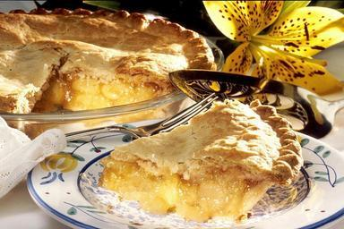

Home
Apple Pie
In Memoriam of Luis Munguia

Pie Crust Ingredients
Double this recipe for a top and bottom crust
- 1 1/4 Cups All-Purpose Flour
- 1/4 Tsp Salt
- 1/2 Cup Butter, Diced and then Chilled
- 1/4 Cup Ice Cold Water, or as needed
Pie Crust Steps
- Gather all ingredients.
- Combine flour and salt in a large bowl.
- add in diced butter and work into flour mixture until mixture resemebles coarse crumbs
- Add 1 tablespoon cold water at a time, mixing with a spatula or your hands until the dough comes together.
(Note: You may need less than the alotted 1/4 cups of water suggested)
- Shape dough into a disc, wrap in plastic, and refrigerate for at least 4 hours or overnight
- place chilled dough on a floured surface and roll out to an 11-inch circle.
- Roll the dough onto the rolling pin and transfer to your pie dish
Pie Filling Ingredients
- 8-10 Medium Apples of Varying Kinds
- 1 1/2 Cups Sugar
- 1 1/2 Cups Brown Sugar
- 3 Tbsp Ground Cinnamon
- 2 Tbsp Vanilla Extract
- 2 Tbsp Honey or Maple Syrup
- 1 Tbsp Butter (Salted)
- 1 1/2 Tsp Pepper
- 1 Tsp Pumpkin Spice
- 1 Tsp Nutmeg
- 1 Tsp Ground Cloves
- 1 Tsp Cream of Tartar
Pie Filling Steps
- Preheat oven to 425 Fahrenheight.
- Peel and slice apples.
- In a large pot add sliced apples and remaining ingredients.
- Simmer the filling at medium heat for 45 minutes. Remove from heat and cool for 20 minutes.
- Once the filing has cooled slightly pour the filing into the pie crust. Add top crust if desired.
- Brush the top with butter and sprinkle sugar and cinnamon on top.
- Bake for 45 minutes. Cover edges of the crust with aluminum foil if they start to brown to much.
- Let cool completely. Enjoy!